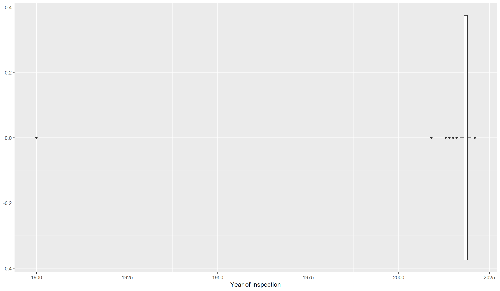
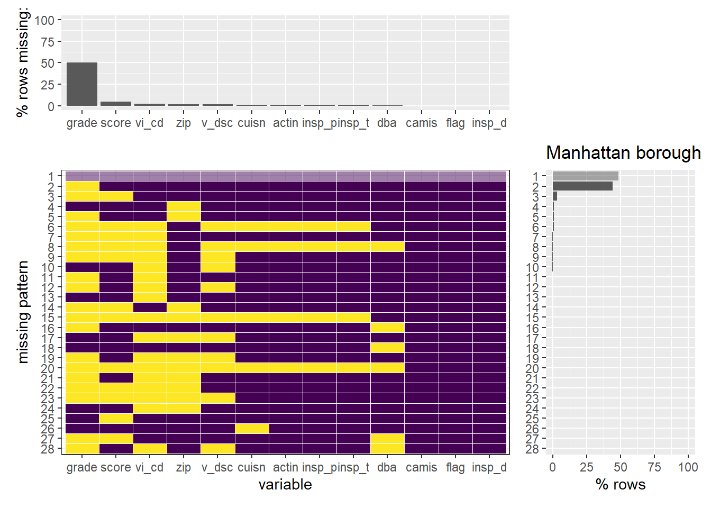
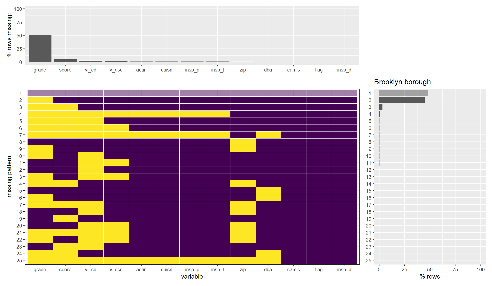
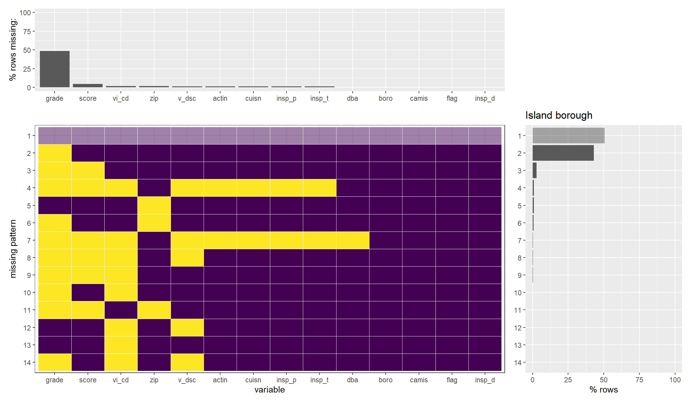

Chapter 4 Missing values
Let us analyze the missing patterns in our data frame

According to the output of plot_missing function, we can confirm that there are a total of 29 missing patterns in our dataset. But if we look at plots in detail, the most common pattern is the one that has no missing values, followed by the pattern with missing values only in the ‘grade’ column. These two cases account for almost all of the most frequent missing patterns. We can also infer from the upper side plot that ‘grade’ has about 50% of its missing values and all other columns have relatively much fewer proportions of missing values.
Since there are so many rows with missing values in ‘grade’, dropping these rows would not make sense. Instead, we will try to impute the ‘grade’ column values by finding exciting patterns in the dataset in further exploration.
Let us now try to see how many rows have a given number of missing values.
We can see that most of the rows in our dataset either have no missing values or have exactly one missing value. The reason for this is evident from the missing-patterns plot we showed above; since the column ‘grade’ has so many missing values. This will be fixed when we impute the values for ‘grade’. We will consider dropping rows with more than five missing values; this is reasonable as these rows are relatively less in quantity.
To better understand the pattern of missing values, we have to check for any placeholders for missing values. A nice strategy for this is to look for outliers.
Let us try to see when most of the inspections were conducted.
Here, we can see that the inspection date with year = 1900 is an outlier and possibly a placeholder for missing values. We confirm below by analyzing the missing patterns of the subset of our dataset with the inspection year 1900.

We can see that most of the data in rows with the inspection year equal to 1900 is missing. Therefore, we will consider dropping these rows.
Let us try to understand if there’s any relation between missing-patterns and borough.
## [1] Queens Brooklyn Manhattan Bronx Staten Island
## Levels: Bronx Brooklyn Manhattan Queens Staten Island



We can see that none of these seem to display any relation between missing-patterns and boroughs, which is worth investigating further.
4.1 Transformation
We drop the rows that have 1900 as their inspection year
## camis dba boro street zip cuisine
## 1 41170643 LITTLE MOROCCO RESTAURANT Queens STEINWAY STREET 11103 Moroccan
## 2 41610426 GLOW THAI RESTAURANT Brooklyn 3 AVENUE 11209 Thai
## 3 41711813 BEDFORD FALLS Manhattan EAST 67 STREET 10065 American
## 4 41429907 MARIO'S DELI Brooklyn NASSAU AVENUE 11222 American
## 5 41624260 ZENG'S RESTAURANT Brooklyn FOURTH AVENUE 11232 Chinese
## 6 41530091 JOY & SNOOK RESTAURANT AND BAKERY Brooklyn NOSTRAND AVENUE 11216 Caribbean
## insp_date action vio_code
## 1 2019-11-04 violations 05H
## 2 2019-08-29 violations 08A
## 3 2016-07-22 violations 10I
## 4 2019-08-30 violations 04F
## 5 2018-12-10 violations 06D
## 6 2017-10-03 violations 22F
## vio_desc
## 1 No facilities available to wash, rinse and sanitize utensils and/or equipment.
## 2 Facility not vermin proof. Harborage or conditions conducive to attracting vermin to the premises and/or allowing vermin to exist.
## 3 Single service item reused, improperly stored, dispensed; not used when required.
## 4 Food, food preparation area, food storage area, area used by employees or patrons, contaminated by sewage or liquid waste.
## 5 Food contact surface not properly washed, rinsed and sanitized after each use and following any activity when contamination may have occurred.
## 6 MISBRANDED AND LABELING
## flag score grade insp_prog insp_type latitude longitude
## 1 Critical 37 <NA> Cycle Inspection Initial Inspection 40.76848 -73.91123
## 2 Not Critical 9 A Cycle Inspection Re-inspection 40.63386 -74.02680
## 3 Not Critical 9 A Cycle Inspection Initial Inspection 40.76636 -73.96250
## 4 Critical 13 A Cycle Inspection Re-inspection 40.72597 -73.94060
## 5 Critical 28 C Cycle Inspection Re-inspection 40.65439 -74.00434
## 6 Not Critical 29 <NA> Cycle Inspection Initial Inspection 40.67266 -73.95025Further, consider
## insp_year n
## 1 2009 1
## 2 2013 8
## 3 2014 15
## 4 2015 116
## 5 2016 10400
## 6 2017 57401
## 7 2018 98407
## 8 2019 136652
## 9 2020 29512
## 10 2021 24635We can see that there are very few observations from the years before 2016. In order to draw meaningful insights, we shall drop all rows with inspection year less than 2016 as we have very less data from this time period. Hence, we’ll analyse only the subset with inspection year from 2016 to 2021.
Let us now save this dataset for further analysis
## camis dba boro street zip cuisine
## 1 41170643 LITTLE MOROCCO RESTAURANT Queens STEINWAY STREET 11103 Moroccan
## 2 41610426 GLOW THAI RESTAURANT Brooklyn 3 AVENUE 11209 Thai
## 3 41711813 BEDFORD FALLS Manhattan EAST 67 STREET 10065 American
## 4 41429907 MARIO'S DELI Brooklyn NASSAU AVENUE 11222 American
## 5 41624260 ZENG'S RESTAURANT Brooklyn FOURTH AVENUE 11232 Chinese
## 6 41530091 JOY & SNOOK RESTAURANT AND BAKERY Brooklyn NOSTRAND AVENUE 11216 Caribbean
## insp_date action vio_code
## 1 2019-11-04 violations 05H
## 2 2019-08-29 violations 08A
## 3 2016-07-22 violations 10I
## 4 2019-08-30 violations 04F
## 5 2018-12-10 violations 06D
## 6 2017-10-03 violations 22F
## vio_desc
## 1 No facilities available to wash, rinse and sanitize utensils and/or equipment.
## 2 Facility not vermin proof. Harborage or conditions conducive to attracting vermin to the premises and/or allowing vermin to exist.
## 3 Single service item reused, improperly stored, dispensed; not used when required.
## 4 Food, food preparation area, food storage area, area used by employees or patrons, contaminated by sewage or liquid waste.
## 5 Food contact surface not properly washed, rinsed and sanitized after each use and following any activity when contamination may have occurred.
## 6 MISBRANDED AND LABELING
## flag score grade insp_prog insp_type latitude longitude
## 1 Critical 37 <NA> Cycle Inspection Initial Inspection 40.76848 -73.91123
## 2 Not Critical 9 A Cycle Inspection Re-inspection 40.63386 -74.02680
## 3 Not Critical 9 A Cycle Inspection Initial Inspection 40.76636 -73.96250
## 4 Critical 13 A Cycle Inspection Re-inspection 40.72597 -73.94060
## 5 Critical 28 C Cycle Inspection Re-inspection 40.65439 -74.00434
## 6 Not Critical 29 <NA> Cycle Inspection Initial Inspection 40.67266 -73.95025